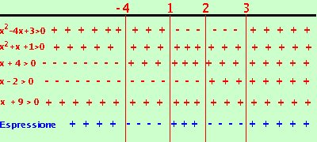

|
risolviamo la disequazione:
x2 + x + 1 > 0 x + 4 > 0 x - 2 > 0 x2 + 9 > 0
sempre positiva x > -4 x > 2 sempre positiva  Riporto su un grafico, evidenziando con un piu' dove il fattore e' positivo e con un meno dove e' negativo. Nella riga in blu metto il segno dell'espressione quoziente Ora faccio il calcolo dei segni: siccome devo prendere dove l'espressione e' negativa l'espressione quoziente sara' negativa dove il prodotto dei segni di tutti i fattori da' risultato negativo La soluzione e' -4 < x < 1 U 2 < x < 3 Nota che avrei ottenuto lo stesso risultato trascurando le righe delle disequazioni sempre positive: infatti un fattore sempre positivo non mi cambia il valore finale del segno |